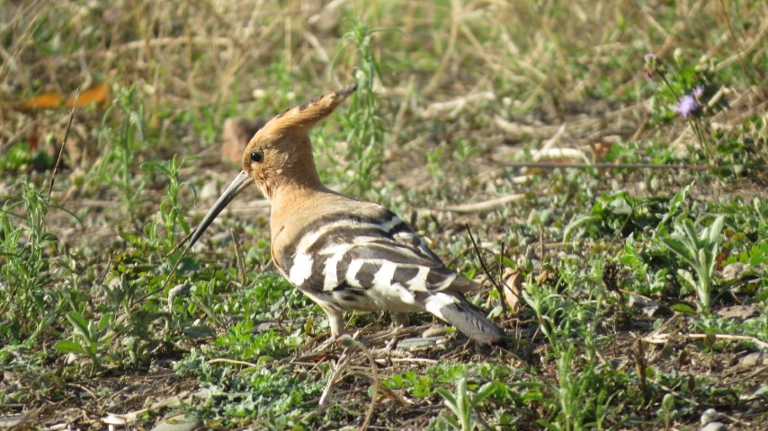
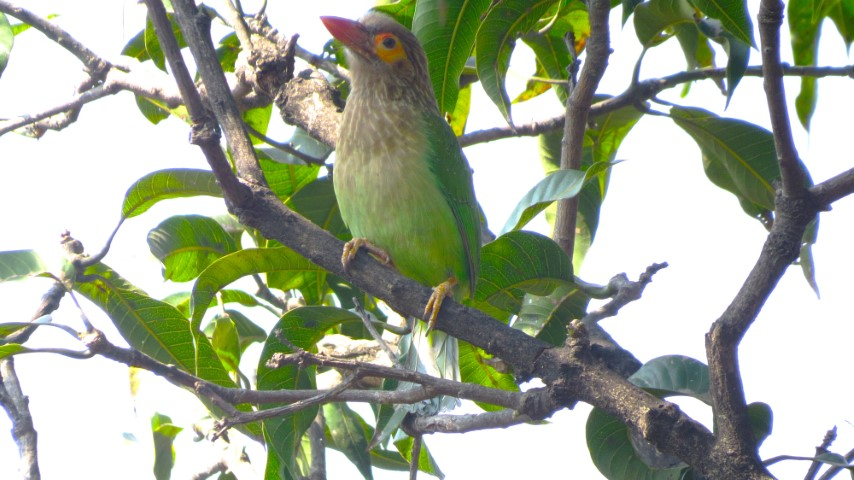
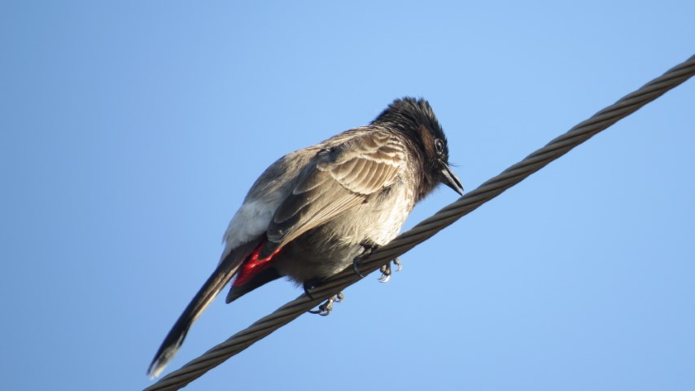
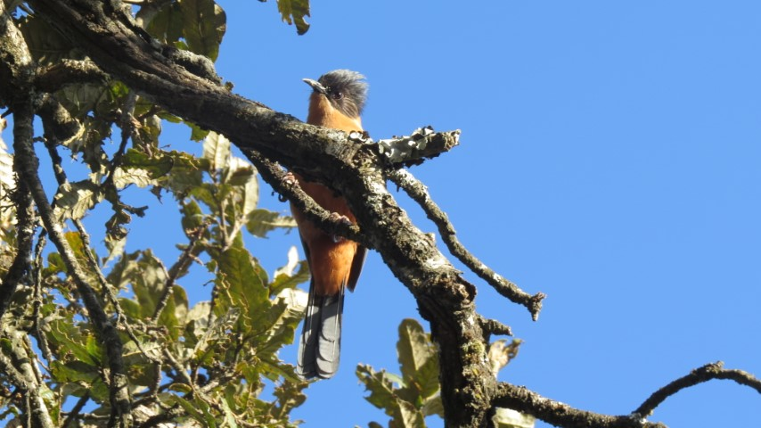
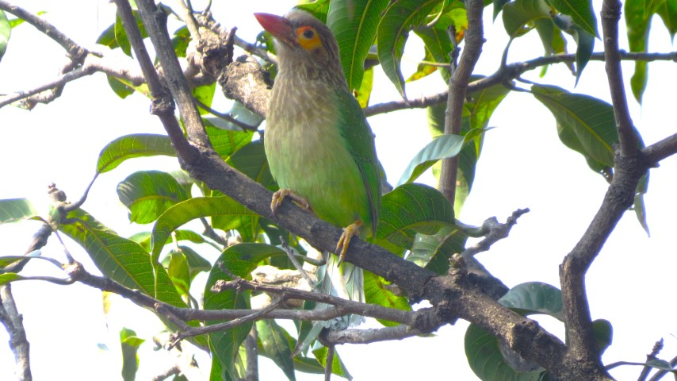
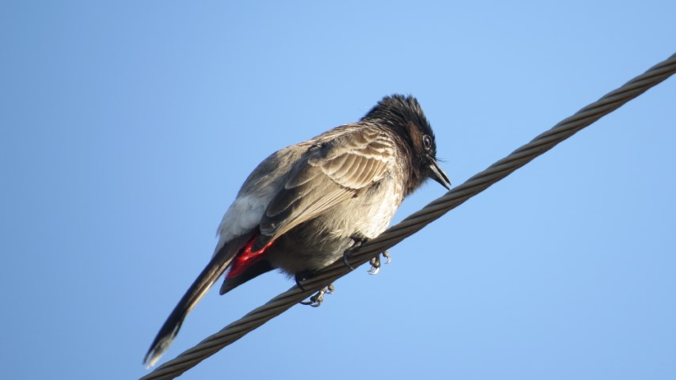
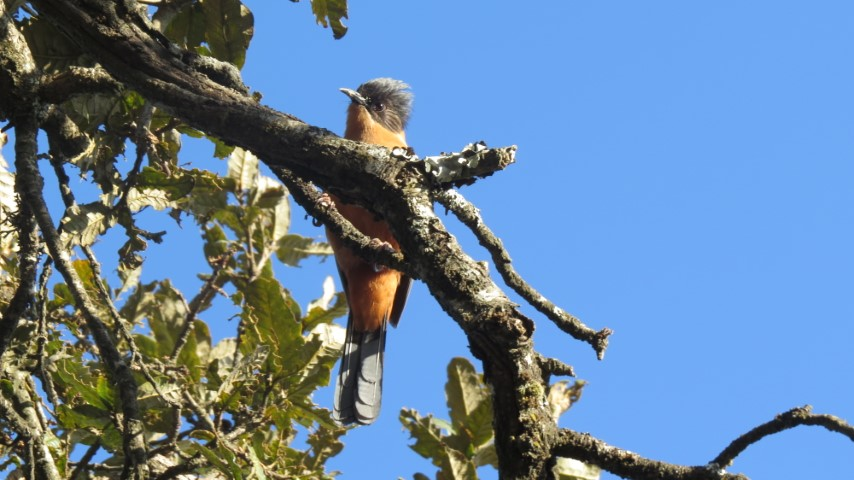

UPDATE: I have now started preserving my birding journey on Instagram for convenience and flexibility. Please refer to the QR or handle to the account or the link: theboxtroll5
"I think the most important quality in a birdwatcher is a willingness to stand quietly and see what comes. Our everyday lives obscure a truth about existence - that at the heart of everything there lies a stillness and a light. - Lynn Thomson"


 




